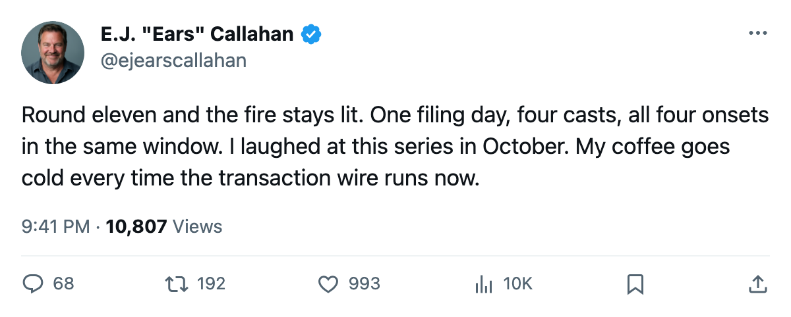
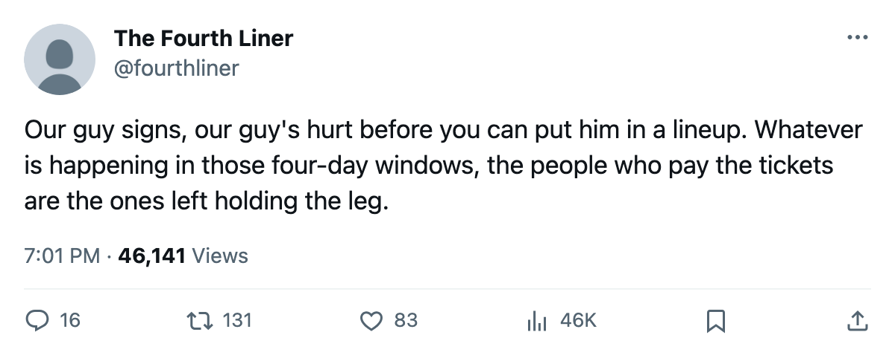

Sign-and-Injure, Round 11: 1 Filing Day, 4 Onsets, 1 Window
Five contracts went in on Nov 27. Today's list has four of them on IR, and the league puts all four onsets in the same two-day window.
 E.J. "Ears" CallahanInsider · The Hot Stove
E.J. "Ears" CallahanInsider · The Hot Stove
Sign-and-Injure, Round 11: 4 of 5 contracts filed 2005-11-27 carry onsets between 2005-11-30 and 2005-12-01
Four of the five contracts filed on 2005-11-27 sit on an injured list today. The league puts all four onsets in one window: between 2005-11-30 and 2005-12-01.
This desk has rated the leak since  Toronto Maple Leafs got three names and three casts back on 2005-10-29. The ledger reads 17 right and 22 wrong, the cost of standing in front of a leak calling every wave. The waves come faster now.
Toronto Maple Leafs got three names and three casts back on 2005-10-29. The ledger reads 17 right and 22 wrong, the cost of standing in front of a leak calling every wave. The waves come faster now.
| Player | Club | Contract | Body part | Out until | Overall |
|---|---|---|---|---|---|
| Tim Leeb67 |  Washington Capitals Washington Capitals | $517,010 | wrist | 2006-01-16 | 66 |
 Alexander Svitov73 Alexander Svitov73 |  Tampa Bay Lightning Tampa Bay Lightning | $633,370 | elbow | 2005-12-07 | 77 |
 Jyrki Lumme78 Jyrki Lumme78 |  San Jose Sharks San Jose Sharks | $190,050 | leg | 2005-12-10 | 74 |
| Brooks Orpik65 |  Pittsburgh Penguins Pittsburgh Penguins | $600,890 | hand | 2006-01-02 | 65 |
The fifth filing belongs to  Columbus Blue Jackets at $445,630, and that man is not on today's list. He is the only one of the five who missed, and the desk rates Columbus's luck for exactly as long as it lasts.
Columbus Blue Jackets at $445,630, and that man is not on today's list. He is the only one of the five who missed, and the desk rates Columbus's luck for exactly as long as it lasts.
The shared onset is the story
Four clubs, four body parts, one window. Leeb is the longest wait: out until 2006-01-16, a 66 overall who signed four days before the wrist registered. Svitov is the best player in the batch at 77 and takes the shortest chair, out until 2005-12-07. Tampa Bay gets its center back long before what the calendar has as the trade deadline, 108 days away.
Lumme sat at 76 on the Bureau's Morale Scale this week, 22 games at 11.4 minutes a night, before San Jose's signing put the leg on the list. Orpik is the youngest and cheapest of the big-money four, a 65-rated defenseman out until 2006-01-02.
What it does to the rental market
Nobody rents a man in a cast. Washington Capitals is 19 points in 24 games and San Jose Sharks is 22 in 22; both are sellers by standings and room, and both just spent money on names the pool can't touch. Pittsburgh Penguins sits 2nd in the Atlantic at 31 points and just added a hand that won't be back until 2006-01-02. Columbus, whose head coach told The Tunnel's Marcus Bell on 2005-11-26 that he has three guys on the shelf thinning the middle, filed the one name still off the list. Brent O'Connor has been buying centers with the room he's got.
Round 10 ran 16 names in 4 days on 2005-11-24 and the desk handed it three fires. Round 11 needed one day for four. The desk has said this pattern is the league's dirtiest business 11 times now, and it has watched it file paperwork every single time.

